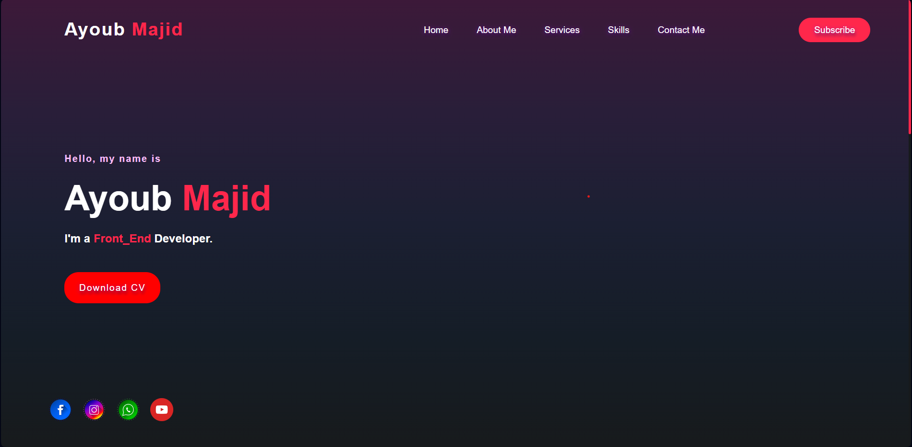
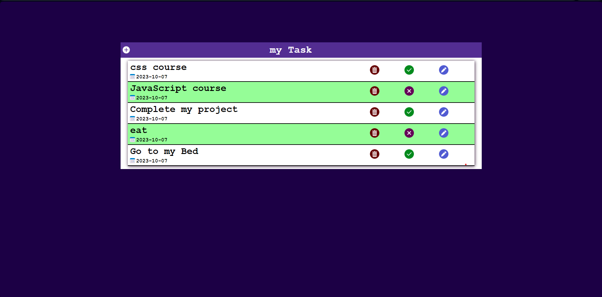
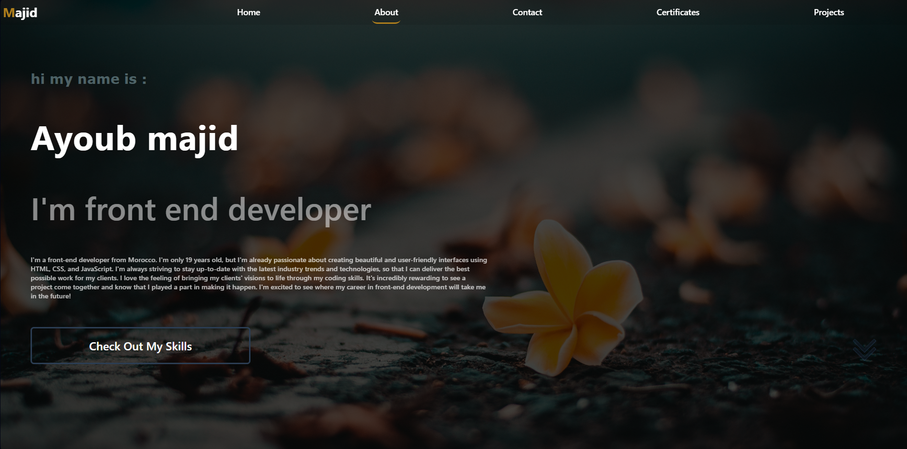
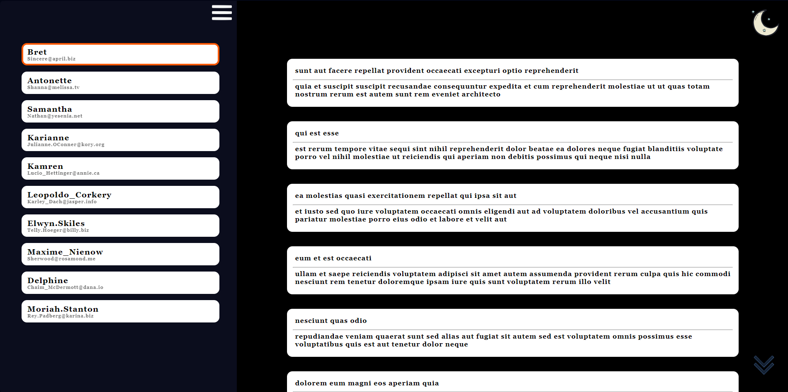
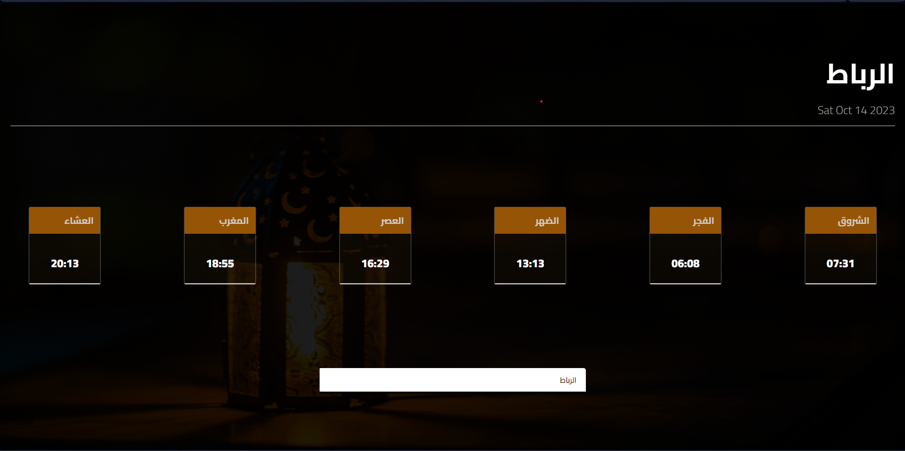
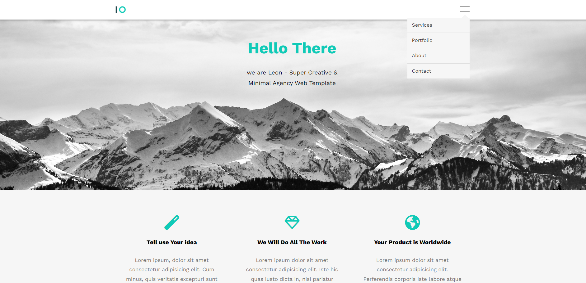
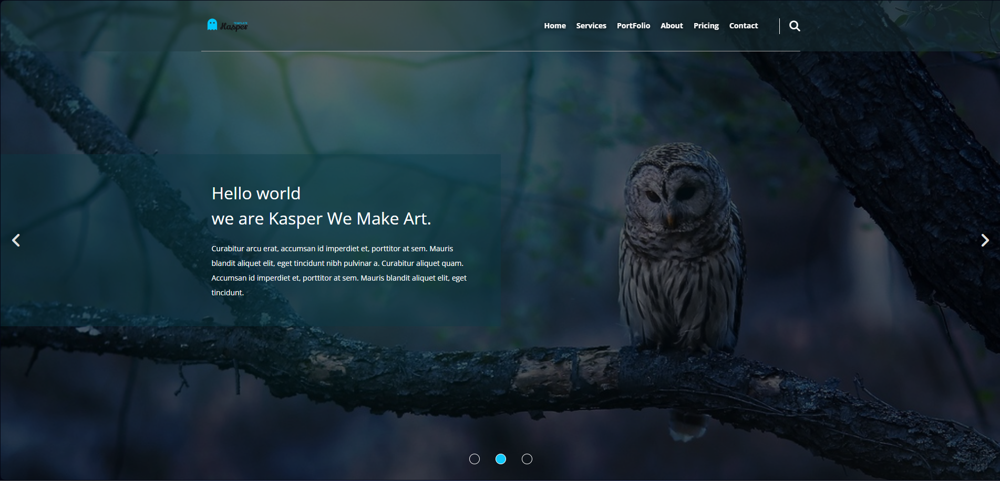

Portfolio 1
My portfolio offers a holistic view of me and my offerings. The 'Home' section connects visitors to my CV and social media, 'About Me' provides background insight, 'Services' and 'Skills' showcase expertise, and 'Contact Me' ensures easy communication—a comprehensive professional identity.

To Do List
This project represents my commitment to designing a customized to-do list system tailored to my unique needs and preferences. Through meticulous planning and innovative solutions, I'm on a quest to streamline my daily tasks and ensure that I can manage my time effectively, achieving greater efficiency and a more satisfying work-life balance.

Portfolio 2
Presenting my new portfolio project—simple and functional, with five sections: Home for a brief introduction, About for a deeper dive into my skills, Contact for easy connection, Certificates for achievements, and Projects for showcasing my work. A dynamic representation of my professional journey.
Earthquake Tracker
I've developed a website tracker to help people stay informed about the latest updates on the Morocco earthquake. This tracker provides real-time data on the number of deaths and injuries, helping individuals and organizations respond more effectively to this natural disaster.
Api Placeholder Version 1
Through meticulous development, I've crafted a dynamic website that invites users to embark on a journey of exploration and discovery. Leveraging a placeholder API, this platform offers a captivating experience, allowing users to delve into a wealth of intriguing posts. As I unveil the front-end of this project

Api Placeholder Version 2
Version 2 comes with some exciting improvements, making the user experience even better. Feel free to explore both and let me know which one you prefer! Your feedback is invaluable, so please take a moment to try it out and share your thoughts. If you encounter any issues or have suggestions for further enhancements

Morocco Prayer Times
Launched "Prayer Times of Morocco": a user-friendly tool powered by 'aladhan.com,' offering personalized schedules with city filtering for accurate and accessible daily prayer times. Stay tuned for its release and share for the benefit of all. 🕌

Template One
Proudly presenting my HTML and CSS project: "Template 1"! Crafted a sleek and responsive website featuring sections for Home, Services, Portfolio, About, and Contact. 💻

Template Two
Template 2," featuring a sleek and functional layout with six sections: Home, Services, Portfolio, About, Pricing, and Contact.